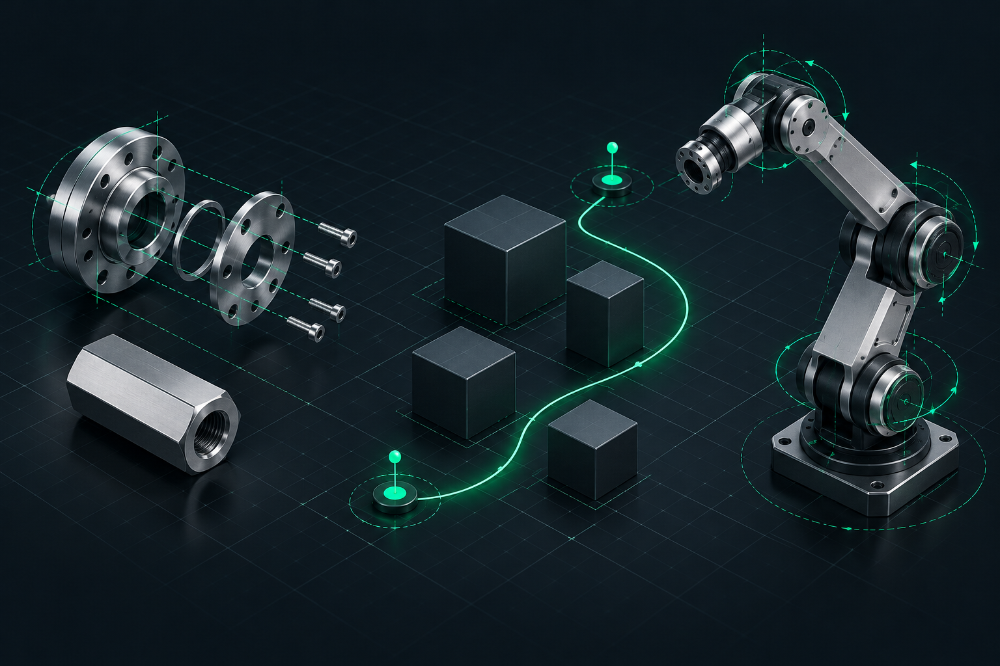
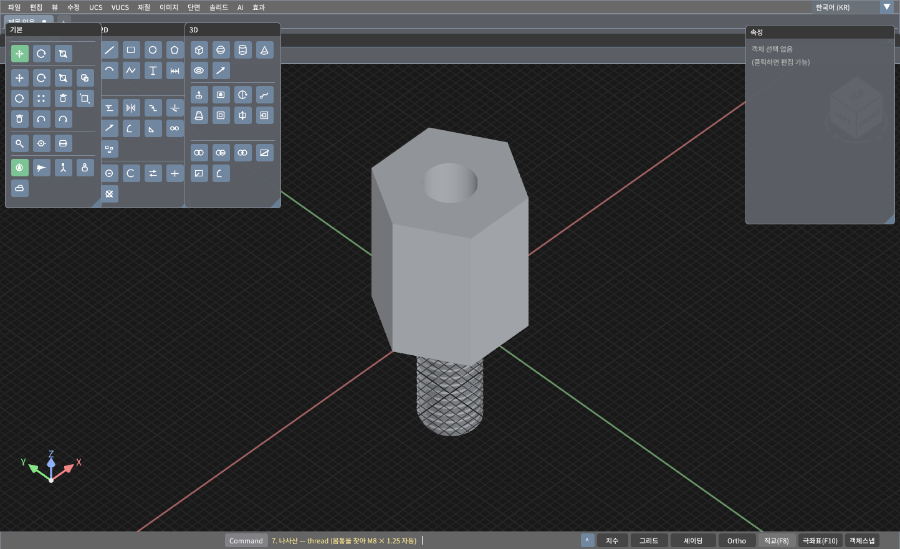
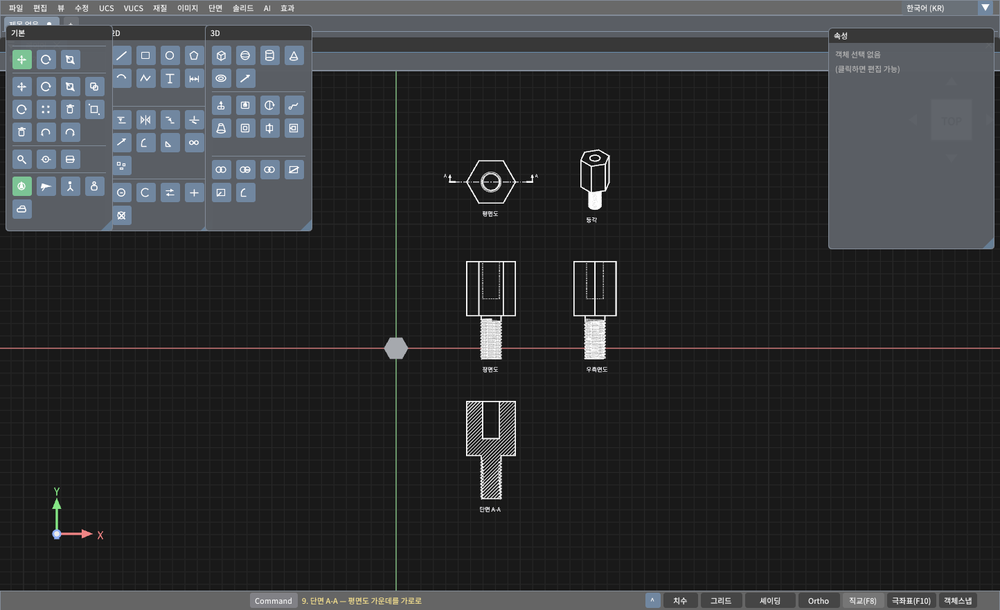
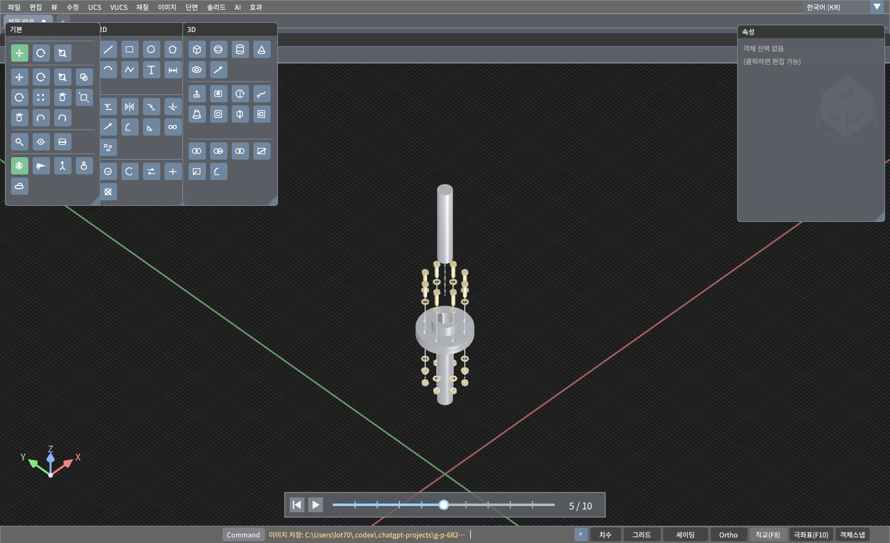
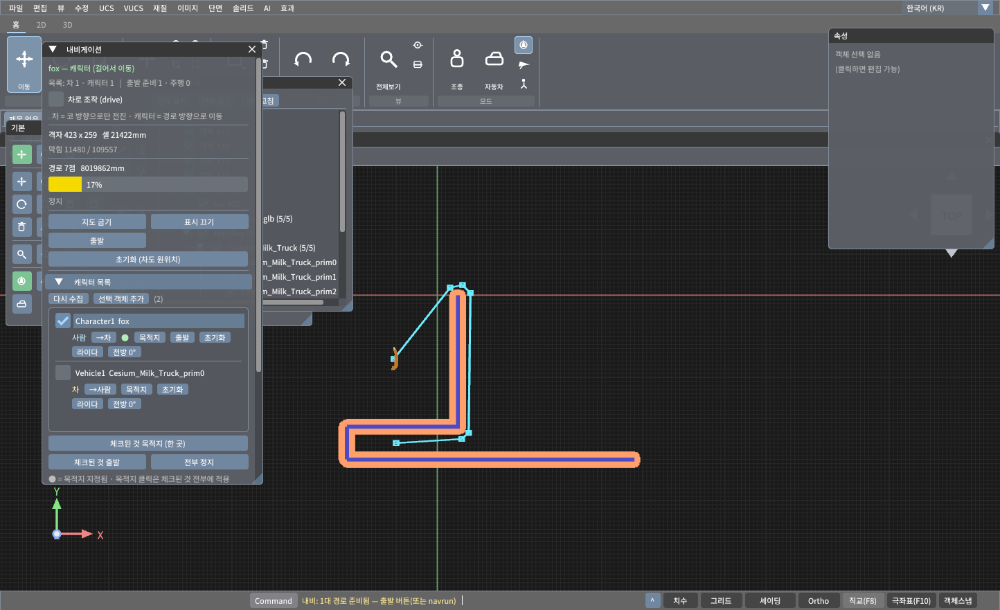

설계의 경계를
넓히세요.
LotCAD는 Vulkan으로 만든 크로스 플랫폼 3D CAD 엔진입니다. CAD 모델링과 시각화부터 나만의 애플리케이션 개발까지 시작해 보세요.
LotCAD 소개
LotCAD는 2D 도면 작성, 3D 모델링, Vulkan 시각화를 하나로 제공하는 크로스 플랫폼 CAD 프로그램입니다. 로컬 LLM과 연동해 2D 평면도 이미지를 바탕으로 3D 모델을 구현할 수 있으며, C API를 통해 데스크톱·모바일 앱에도 엔진을 통합할 수 있습니다.
모델링과 편집
스케치, 박스, 원통, 돌출 형상을 만듭니다. 지원되는 피처의 치수를 편집하고 포켓과 관통 컷을 추가한 뒤, LotCAD 프로젝트로 저장하세요.
도면과 문서
선, 원호, 문자, 치수, 해치를 사용합니다. 투영 뷰와 단면도를 만들고 지원되는 도면 선을 PDF나 PNG로 내보내세요.
시각화와 앱 통합
조립품, 가져온 모델, 로봇의 움직임을 살펴보세요. SDK 예제로 렌더링과 CAD 명령을 앱에 연결할 수 있습니다.
로컬 LLM 연동 2D → 3D
로컬 LLM과 연동하여 2D 평면도 이미지를 해석하고, LotCAD에서 3D 모델로 구현합니다.
형상에서 움직임까지
정밀한 부품을 모델링하고, 장애물을 피해 이동하며, 관절로 연결된 조립품을 구성하세요.

LotCAD 실행 화면
육각 스페이서, 플랜지 커플링, 내비게이션 데모의 실제 실행 화면입니다.


3D 부품 모델링
돌출, 탭 구멍 가공, 외부 나사산으로 만든 육각 스페이서입니다.


도면 뷰와 단면
평면·정면·우측·등각 뷰와 내부 구멍을 보여 주는 A-A 단면입니다.


조립품 살펴보기
38개 부품으로 구성된 플랜지 커플링의 분해 과정입니다.


내비게이션과 장애물 회피
내비게이션 테스트 데모에서 장애물을 돌아가는 경로를 계산한 화면입니다. 목적지를 클릭하면 에이전트가 장면 안에서 이동합니다.
내비게이션 영상 보기 →로컬 LLM 연동 2D 평면도 3D 구현
로컬 LLM과 연동하여 2D 평면도 이미지를 바탕으로 3D 모델을 구현하는 데모입니다.
YouTube 영상 보기 →리깅과 관절 애니메이션
부모·자식 계층 구조로 객체를 연결하고, 회전축과 피벗을 지정해 관절을 제어합니다. 수동 회전과 자동 왕복 운동, 위상 차이 및 ROS 없이 URDF 불러오기를 시연합니다.
관절 애니메이션 데모 보기 →지원 파일 형식
편집에는 기본 프로젝트 형식을, 교환에는 메시 형식을, 문서화에는 도면 형식을 사용하세요. 링크가 있는 예제는 열거나 내려받을 수 있으며, 다른 파일명은 각 형식의 용도를 보여 주는 예시입니다.
| 확장자 | 지원 작업 | 용도 | 예제 |
|---|---|---|---|
| .lot | 열기 · 저장 | 객체, 레이어, 편집 가능한 모델링 정의를 담는 LotCAD 기본 프로젝트입니다. | hex_spacer_3d.lot — 편집 가능한 스페이서 프로젝트 |
| .obj | 가져오기 · 내보내기 | 메시와 곡선을 공유하기 위한 Wavefront 형식입니다. | cube.obj — 큐브 메시 |
| .stl | 가져오기 · 내보내기 | 3D 프린팅과 메시 교환을 위한 삼각형 메시입니다. | cube.stl — 10 mm 큐브 |
| .dxf | 가져오기 · 내보내기 | 지원되는 선, 원, 원호, 폴리라인, 문자를 교환하는 2D 도면 형식입니다. | square-circle.dxf — 사각형과 원 |
| .gltf / .glb | 가져오기 · GLB로 내보내기 | 장면과 메시를 교환합니다. 내보내기는 하나의 바이너리 GLB 파일로 저장합니다. | BoxAnimated.glb — 애니메이션 예제 Duck.gltf — 관련 파일이 포함된 모델 |
| .fbx | 가져오기 | 정적 폴리곤 메시, 재질, 텍스처를 가져옵니다. | model.fbx — 정적 모델 가져오기 |
| .ply | 가져오기 | 포인트 클라우드를 가져오며, 점 색상 정보가 있으면 함께 읽습니다. | scan.ply — 포인트 클라우드 예제 |
| .nrrd / .nhdr | 가져오기 | 표면 메시를 추출하기 위한 볼륨 데이터입니다. | volume.nrrd — 볼륨 데이터 |
| .nii / .nii.gz | 가져오기 | 표면 메시를 추출하기 위한 NIfTI 볼륨 데이터입니다. | volume.nii.gz — 압축된 볼륨 데이터 |
| .pdf / .png | 도면 내보내기 | 문서와 이미지용 도면 뷰, 치수, 문자, 선을 내보냅니다. | spacer-drawing.pdf — 부품 도면 spacer-drawing.png — 도면 이미지 |

FBX는 정적 형상을, PLY는 점 데이터를 가져옵니다. PDF·PNG 도면 내보내기는 지원되는 2D 선과 도면 뷰를 포함합니다.
CAD와 SDK 예제
데모 영상에서 작업 흐름을 살펴보고 공개 SDK 예제로 나만의 앱을 만들어 보세요.
Windows 앱
LotCAD를 MFC, WPF, WinForms에 연결합니다. C# 예제는 P/Invoke로 네이티브 C API를 호출합니다.
MFC 예제 → WPF 예제 → WinForms 예제 →Swift와 Android
macOS·iOS Swift 앱 또는 JNI로 연결하는 Android Kotlin 인터페이스를 살펴보세요.
macOS 예제 → iOS 예제 → Android 예제 →엔진 기능
도면 작성을 넘어 내비게이션, 관절 제어, 앱 통합으로 확장하세요.
리깅과 관절 제어
장면의 객체를 부모·자식 구조로 연결합니다. 회전·슬라이드 관절을 정의하고 축과 피벗을 설정한 뒤, 인터페이스나 C API로 관절 값을 제어합니다.
로봇 예제 보기 →로컬 LLM 기반 2D → 3D 변환
로컬 LLM과 연동해 2D 평면도 이미지를 해석하고, 이를 바탕으로 LotCAD에서 3D 모델을 구현합니다.
2D 평면도 3D 구현 데모 보기 →네이티브 C API
Qt/QML, MFC, WPF, WinForms, Swift, Android 앱에 엔진을 통합합니다. C++에서 직접 호출하거나 C#의 P/Invoke, Kotlin의 JNI로 CAD 명령을 실행합니다.
SDK 앱 통합 예제 보기 →데모 영상
LotCAD 모델링과 시각화 데모를 확인하세요.
내비게이션과 장애물 회피
목적지를 선택하면 에이전트가 장애물을 피해 장면 안에서 이동하는 모습을 볼 수 있습니다.
부모·자식 계층 구조와 관절 애니메이션
LotCAD에서 객체를 부모·자식 구조로 연결하고 회전축과 피벗을 설정해 관절을 제어합니다. 수동 슬라이더, 자동 왕복 운동, 관절별 위상 차이와 ROS 없이 URDF 불러오기를 시연합니다.
지원 플랫폼
Windows, macOS, Linux용 데스크톱 앱을 내려받으세요. Android·iOS 링크는 SDK 예제로 연결됩니다.
LotCAD 다운로드
LotCAD 0.1.0 베타 — 데스크톱 프로그램 다운로드
설치 없이 웹에서 실행하세요. WebGPU를 지원하는 브라우저가 필요합니다.
요구 사항: Apple Silicon · macOS 14+; Windows 10/11 x64; Ubuntu 24.04+ x86_64. Windows와 Linux에는 Vulkan GPU 드라이버가 필요합니다.